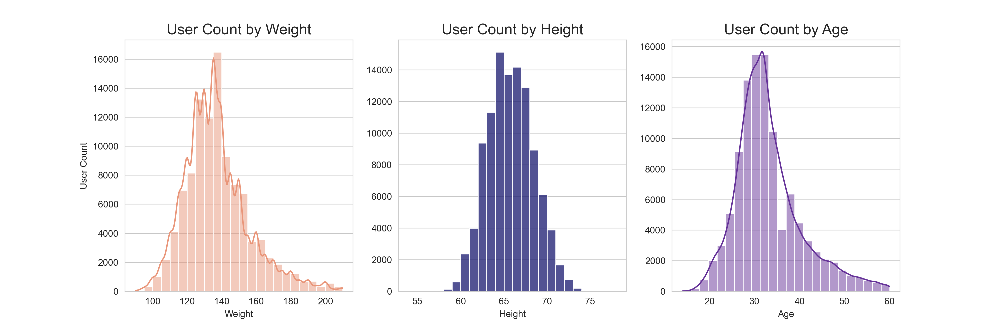
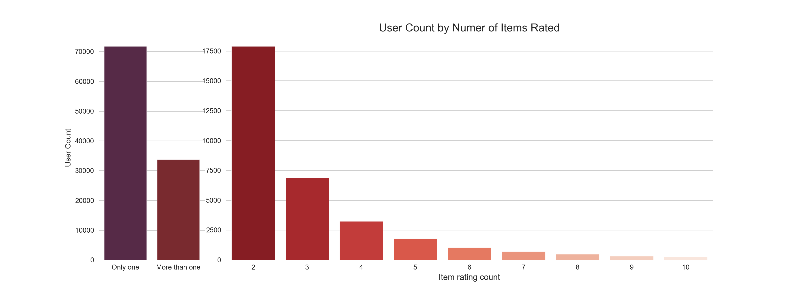
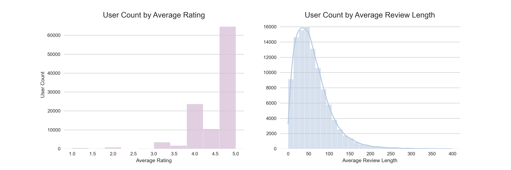
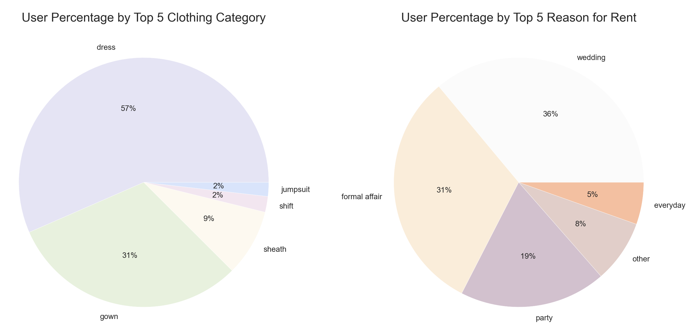
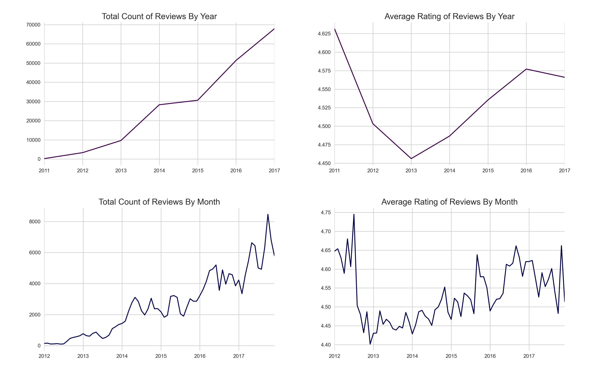
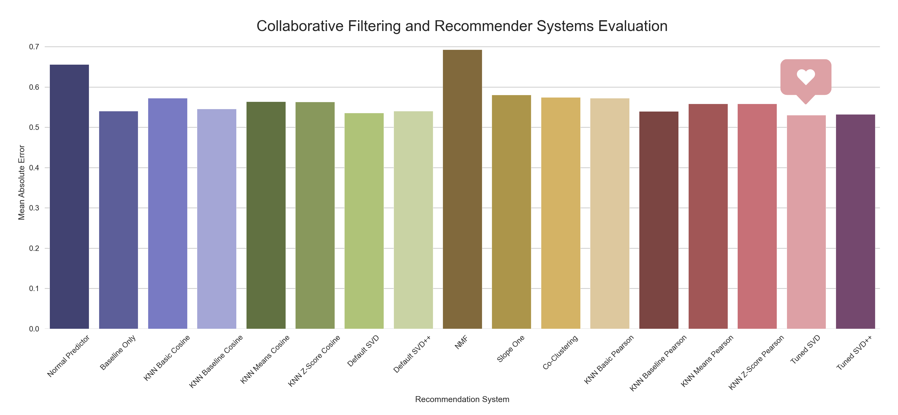

Project
I. Overview
A recommender engine is developed using 200,000 reviews at Rent the Runway to expose users to relevant products that tailor to their preferences. Content-based recommenders and collaborative filtering systems are implemented, including K-Nearest Neighbors and Matrix Factorization algorithms. The recommendations are generated according to predicted user ratings. Upon evaluation of the models, the Singular Value Decomposition resulted to the lowest mean absolute error of 0.5 on the five point rating scale.
II. Business Problem
The clothing rental industry grows as more companies follow suit of the retailer Rent the Runway, which pioneered online services and subscriptions for designer rentals. To help grow the revenue of clothing rental companies, I develop recommendation systems that recommend retail products for users to rent. Doing so will expose users to relevant products that tailor to their preferences. Using Rent the Runway data, I conduct an analysis of the product reviews, model data to predict ratings, and provide recommendations accordingly.
III. Data Understanding
The Rent the Runway reviews (data source) contain 200,000 ratings of 6,000 unique items rented between 2010 and 2018 by over 100,000 unique users. To clean the data, I take the following pre-processing steps:
- Drop missing values of the target variable
rating. - Impute missing values of the other variables.
- Median for numerical features
- Mode for categorical features
- Perform feature engineering.
- Create two additional dataframes.
- Group the data by
user_id - Group the data by
item_id
- Group the data by
Data Visualization
Let’s explore and visualize the processed data.
 Normally distributed and diverse ranges of weight, height, and age above.
 Overall, two thirds of users rented only one item and the remaining third rented more than one, on the left chart. Majority of those who rented more than once rented exactly two items, on the right chart.
 A left-skewed distribution for the average rating per user with most of them giving the highest rating, on the left chart. And a right-skewed distribution for the average length of text review per user, on the right chart.
 The most common clothing categories are dresses and gowns that align with the most common reasons for renting which are for wedding, formal affair, and party.
Time Series Analysis 
- The count of reviews increased over the years from 10,000 in 2013 to almost 70,000 by 2018.
- The count of reviews peak during months of spring and fall with the highest spike of over 8,000 reviews in October of 2017.
- The average ratings steadily increased from over 4.45 in 2013 to 4.575 in 2016 but went down by less then 0.025 in 2017.
- The average ratings peak during the latter months of the year and aligned with the higher counts of rentals in the fall.
IV. Recommendation Systems
First, I create a set of generalized recommendations based on all items, I calculate their weighted ratings, and return the top 10 highest-rated items across the board. To simulate the online shopping experience, I can also filter the data features like wedding for event. Next, I personalize the recommendations by applying different algorithms for Content-Based Recommenders and Collaborative Filtering Systems.
Popularity Recommendations
Bayesian Average
where:
W = Weighted rating
v = Number of ratings for the item
m = Minimum number of ratings required to be listed on top chart
R = Average rating of the item
C = Mean rating across the entire data
Code:
m = item_data['user_count'].quantile(0.9)
C = item_data['rating_average'].mean()
def weighted_rating(x, m=m, C=C):
'''
Calculates weighted rating based on Bayesian Average.
'''
v = x['user_count']
R = x['rating_average']
return (v/(v+m) * R) + (m/(m+v) * C)
def popular_recommendation(df=data, n=10):
'''
Returns the most popular items according to the highest weighted ratings.
'''
item_df = create_item_data(df)
top_item_ratings = item_df.loc[(item_df['user_count']>=m)]
top_item_ratings['score'] = top_item_ratings.apply(weighted_rating, axis=1)
top_item_ratings = top_item_ratings.sort_values('score', ascending=False)
return top_item_ratings.head(n)
Content-Based Recommenders
Content-based recommenders are based on the idea that if a user likes an item, the user will also like items similar to it. To measure the similarity between the items, I calculate the Pearson correlation using their numerical and categorical features. Then, I construct a similarity_matrix of all items to generate the content-based recommendations for any item_id.
Code:
def item_similarity(item_df):
'''
Measures pearson correlation of items from the table of item data and returns a similarity matrix.
'''
item_df = item_df.drop(['fit_small', 'fit_large', 'weight_mean', 'rented_for_all', 'height_mean', 'size_mean',
'age_mean', 'review_month_top'], axis=1)
similarity_features = item_df[['item_id', 'fit', 'user_count', 'weight_median', 'rating_average', 'rented_for_top',
'body_type_top', 'category_top', 'height_median', 'size_median', 'age_median',
'review_length_average', 'review_season_top']]
similarity_features = similarity_features.set_index('item_id')
similarity_features = pd.get_dummies(similarity_features, columns=['rented_for_top', 'body_type_top', 'category_top', 'review_season_top'])
similarity_matrix = similarity_features.T
similarity_matrix = similarity_matrix.corr(method='pearson')
return similarity_features, similarity_matrix
def content_based_similarity(similarity_matrix, item_id, n=20):
'''
Returns the most similar item recommendations to the given item based on the similarity matrix.
'''
recommendations = similarity_matrix[item_id].sort_values(ascending=False)
recommendations = recommendations.drop([item_id], axis=0).index
recommendations_list = []
for i in range(n):
recommendations_list.append(recommendations[i])
display(item_data.loc[item_data['item_id']==item_id])
print(f'----------------------------------------\nTop {n} Recommendations for Item #{item_id}:')
recommendations_df = item_data.loc[item_data['item_id'].isin(recommendations_list)]
return recommendations_df
To take it a step further, I use the text features as well to create a Text Review-Based Recommender using Natural Language Processing, to:
- Clean the text by removing stopwords and performing lemmatization.
- Create the Term Frequency-Inverse Document Frequency (TF-IDF) vectors for the documents, which are the reviews.
- Compute the pairwise cosine similarity from the matrix of TF-IDF scores, given by the dot product between each TF-IDF vector.
Code:
count = CountVectorizer()
tfidf = TfidfVectorizer(ngram_range=(1,3))
def text_based_recommendation(text_item_df, item_id, n=10, text_review=True, category=False):
'''
Returns the most similar item recommendations to the given item based on text reviews.
'''
if text_review:
tfidf_matrix = tfidf.fit_transform(text_item_df['review'])
cosine_similarity_ = linear_kernel(tfidf_matrix, tfidf_matrix)
if text_review == False and category == True:
count_matrix = count.fit_transform(text_item_df['rented_for'])
cosine_similarity_ = cosine_similarity(count_matrix, count_matrix)
indices = pd.Series(text_item_df.index, index=text_item_df['item_id']).drop_duplicates()
idx = indices[item_id]
similarity_scores = list(enumerate(cosine_similarity_[idx]))
similarity_scores = sorted(similarity_scores, key=lambda x: x[1], reverse=True)
top_similarity_scores = similarity_scores[1:n+1]
item_indices = [i[0] for i in top_similarity_scores]
top_text_based_recommendations = text_item_df['item_id'].iloc[item_indices]
display(item_data.loc[item_data['item_id']==item_id])
print(f'----------------------------------------\nTop {n} Recommendations for Item #{item_id}:')
recommendations_df = item_data.loc[item_data['item_id'].isin(top_text_based_recommendations)]
return recommendations_df
Some differences between the text-based recommendations and the content-based recommendations to the same item:
| Feature | Content-based | Text-based | Item |
|---|---|---|---|
| rating_average | 4.38 - 4.69 | 4.43 - 4.77 | 4.40 |
| rented_for_top | party, formal affair, wedding | formal affair (across the board) | formal affair |
| body_type_top | hourglass, athlete | hourglass (across the board) | hourglass |
| category_top | dress, gown, sheath | gown (across the board) | gown |
Collaborative Filtering Systems
Collaborative filtering systems recommend items to a user based on the user’s past ratings and on the past ratings and preferences of other similar users. I apply the different implementations of collaborative filtering recommendation systems using the Python library surprise:
| Prediction Algorithm | Description |
|---|---|
| Normal Predictor | Algorithm predicting a random rating based on the distribution of the training set, which is assumed to be normal. |
| Baseline Only | Algorithm predicting the baseline estimate for given user and item. |
| KNN Basic | A basic collaborative filtering algorithm. |
| KNN Baseline | A basic collaborative filtering algorithm, taking into account the mean ratings of each user. |
| KNN with Means | A basic collaborative filtering algorithm, taking into account the z-score normalization of each user. |
| KNN with Z-Score | A basic collaborative filtering algorithm taking into account a baseline rating. |
| Single Value Decomposition | The famous SVD algorithm, as popularized by Simon Funk during the Netflix Prize. When baselines are not used, this is equivalent to Probabilistic Matrix Factorization. |
| Single Value Decomposition ++ | The SVD++ algorithm, an extension of SVD taking into account implicit ratings. |
| Non-Negative Matrix Factorization | A collaborative filtering algorithm based on Non-negative Matrix Factorization. |
| SlopeOne | A simple yet accurate collaborative filtering algorithm. |
| CoClustering | A collaborative filtering algorithm based on co-clustering. |
Data Modeling
recommendation_systems = [NormalPredictor(),
BaselineOnly(),
KNNBasic(sim_options={'name':'cosine', 'user_based':False}),
KNNBaseline(sim_options={'name':'cosine', 'user_based':False}),
KNNWithMeans(sim_options={'name':'cosine', 'user_based':False}),
KNNWithZScore(sim_options={'name':'cosine', 'user_based':False}),
SVD(),
SVDpp(),
NMF(),
SlopeOne(),
CoClustering()]
# Evaluate recommendation systems using Mean Absolute Error
evaluation = []
for system in recommendation_systems:
score = cross_validate(system, read_data, measures=['MAE'], cv=3, verbose=False)
evaluation.append((str(system).split(' ')[0].split('.')[-1], score['test_mae'].mean()))
evaluation = pd.DataFrame(evaluation, columns=['system', 'mae'])
Hyperparameter Tuning
# Change the KNNs similarity measure from cosine to pearson
sim_pearson = {'name':'pearson', 'user_based':False}
pearson_evaluation = []
pearson_knns = [knns.KNNBasic(sim_options=sim_pearson),
knns.KNNBaseline(sim_options=sim_pearson),
knns.KNNWithMeans(sim_options=sim_pearson),
knns.KNNWithZScore(sim_options=sim_pearson)]
for system in pearson_knns:
pearson_score = cross_validate(system, read_data, measures=['MAE'], cv=3, verbose=False)
pearson_evaluation.append((str(system).split(' ')[0].split('.')[-1], pearson_score['test_mae'].mean()))
To optimize the Singular Value Decomposition models, I perform GridSearchCV.
def grid_search(system, params):
'''
Implements grid search and returns best cross validation scores and parameters.
'''
model = GridSearchCV(system, param_grid=params, n_jobs=-1)
model.fit(read_data)
print(model.best_score)
print(model.best_params)
params_svd1 = {'n_factors': [10, 50, 100], 'n_epochs': [10, 20, 100], 'lr_all': [0.001, 0.005, 0.01], 'reg_all': [0.02, 0.05, 0.1]}
grid_search(SVD, params_svd1)
params_svdpp1 = {'n_factors': [10, 50, 100], 'n_epochs': [10, 20, 100], 'lr_all': [0.001, 0.005, 0.01], 'reg_all': [0.02, 0.05, 0.1]}
grid_search(SVDpp, params_svdpp1)
V. Results
Model Performance
To evaluate the recommendation systems, I use the mean absolute error which measures the difference between the rating predicted by the model and the actual rating by the user.

The results show that the tuned Singular Value Decomposition attains the lowest Mean Absolute Error of 0.5 on the 5 point rating scale.
Recommender Engine
def svd_recommendation(user_id, n=10):
'''
Returns top item recommendations generated by the Single Value Decomposition model.
'''
unique_ids = df['itemID'].unique()
item_user_id = df.loc[df['userID']==user_id, 'itemID']
items_to_predict = np.setdiff1d(unique_ids, item_user_id)
engine = SVD(n_factors=10, n_epochs=20, lr_all=0.01, reg_all=0.02)
engine.fit(read_data.build_full_trainset())
svd_recommendations = []
for i in items_to_predict:
svd_recommendations.append((i, engine.predict(uid=user_id, iid=i).est))
display(user_data.loc[user_data['user_id']==user_id])
print(f'----------------------------------------\nTop {n} Recommendations for User #{user_id}:')
svd_recommendations = pd.DataFrame(svd_recommendations, columns=['item_id', 'predicted_rating'])
svd_recommendations = svd_recommendations.sort_values('predicted_rating', ascending=False).head(n)
svd_recommendations = svd_recommendations.merge(item_data, on='item_id')
return svd_recommendations
Source Code: Github Repository
Contact
Feel free to contact me for any questions and connect with me on Linkedin.

Copyright 2022. Powered by Introduction theme for Hugo.